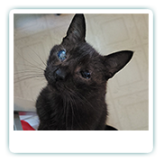
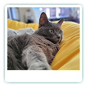
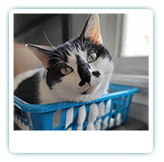
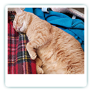
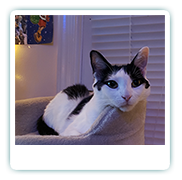

Octavian
The Lover
Age: 14 yrsSpecial Feature: Octavian has an eye condition known as Feline Eyelid Agenesis. This means when he was born, his upper eyelid didn't form correctly. Thankfully, he was found and brought to a veterinarian who was able to successfully perform surgery to allow Octavian to see. Fortunately, he doesn't need special eyedrops, as other cats with this condition might need. As he ages, his sight has started to diminish, but his excellent hearing more than makes up for the lost vision!
As a result, his eyes look a little different but that doesn't stop Octavian from being the friendliest cat you'll ever meet! Regardless of who you are, he is determined to be your best friend. He is insatiably curious and always needs to check to see what groceries we bring home just in case there is something for him in there.
Likes: Showers (no, really!), anything edible (he'll try anything twice and is a known enforcer of The Cheese Tax) and sleeping in traditionally uncomfortable positions (such as shoes or a plugged in guitar amp)!
Dislikes: Being denied his shower, being unable to find us, not being fed at the time he thinks he should be fed.
Scarlett
The Queen
Age: 10 yrsSpecial Feature: Scarlett has the most beautiful fur coat that you can imagine. Plush grey fur that almost shifts between dark grey and light grey, she works hard to make it as lustrous as possible. She may be timid at first, but she is known to warm up to people once they complement her appearance!
As the Alpha cat, Scarlett is a prideful kitty but also incredibly sweet if you take the time to get to know her. She loves spooning underneath the covers and if someone stops petting her, she gently touches their arm with a single claw to remind them that she is still present and desires more attention. She enjoys playing with the infamous Wiggle Worm, and while her stamina for chasing it pales in comparison to Anya, she makes up for it in the strength of her pounce and her speed.
Likes: Snuggling, being nosy, soft blankets, being tucked in, being brushed, and being held (while sitting down!). She also enjoys having her photo taken and is known to acknowledge the camera and pose in a "natural" way.
Dislikes: Getting her claws trimmed, being picked up, having her authority challenged by the youngest cat, being turned away for snuggles.
Charlie
The Moo Cow
Age: 8 yrsSpecial Feature: Her eyes are like beautiful jade stones, and her facial markings make it seem as though she's wearing eyeliner! She has a heart shaped black blob on her side, though its yet to be documented. Her right paw has black toe beans, while her left paw is entirely pink toe beans, further adding to her 'Moo Cow' charm~ She will suckle on soft blankets and make biscuits before curling up for a nap, with her favorite fabric being minky fleece.
Charlie is extremely shy, to the point where people have visited the House of the Meows several times over several years and has yet to even glimpse her. Despite that, she is very friendly with us and loves to jump on things so she can get pets. She has a favorite toy, Giraffey (a giraffe plushie) that she will throw in the air and catch. She also sleeps with Giraffey and will even groom the plushie if it was just washed. She prefers to be alone but will spend time near one of us if theres a storm or she's feeling cuddly!
Likes: Kibble, sleeping in the sun, watching the birds outside from the comfort of her bed, snoozing in hidey-holes.
Dislikes: Thunderstorms, visitors, different food, expensive food, healthy food, 99% of treats,
Ivan
The Fighter
Age: 7 yrsSpecial Feature: Ivan is a polydactyl cat, meaning he was born with additional toes, specifically on his front paws. Because of this, it looks like he has little mittens for paws. While he is able to use a scratcher to care for his claws, his bonus claws need to be monitored and trimmed otherwise it can cause him pain if it starts to get too long.
Ivan is incredibly intelligent and was trained to use voice buttons to let us know what toy he wants to play with. Strangely enough, while he does enjoy pets, he enjoys being patted roughly even more. He will flop on the ground, stretch and wait for one of us to start patting him like a little drum as he purrs like a tiny, orange engine. If we stop, he immediately looks at us and makes a little meow, as if to say, "Please continue". Known as 'The Fighter', he has an unfortunate tendency to bop other cats that I'm giving attention to, or trying to crowd them away from me, as he feels there can only be one object of my affection. This includes my husband. His best friend is Anya, and she is the exception to the rule.
Likes: Getting pats, watching Anya play with Wiggle Worm, getting attention from me, playing in his shark tunnel, treats, laying in the sun.
Dislikes: Having his paws touched, closed doors, a change in routine, water, the Evil Vacuum Cleaner
Anya
The Heir
Age: 4 yrsSpecial Feature: Despite being an adult cat, Anya is small for her age and still looks like a young cat. She does not meow like other cats, instead choosing to squeak to communicate with us. Anya is known for her excellent behavior (aside from chasing Charlie) and will most certainly win Cat of the Year. She is intelligent and understands when things are wrong, such as when our dishwasher broke and was spewing bubbles and water, or when lights were left on at night. She is extremely attached to my husband and follows him around the house as an escort. She will wait for him by the stairs in the morning and as soon as he approaches her, she races up the stairs to show him the way to his office (in case he forgot overnight).
Despite being the youngest cat, she is poised to take over as Alpha Cat once Scarlett retires. She is bonded with Ivan, and they hang out together a lot and often race each other through the house. She is an enthusiastic Wiggle Worm fan and has a tendency to play until she is completely out of breath. She recently got her own little plot of cat grass and enjoys chewing that throughout the day.
Likes: Chewing cat grass, resting her head as she sleeps, kibbies, getting petted while she eats the kibbies, Wiggle Worm.
Dislikes: the Evil Vacuum Cleaner, going to the vet, closed doors, not being able to be where my husband is, visitors.